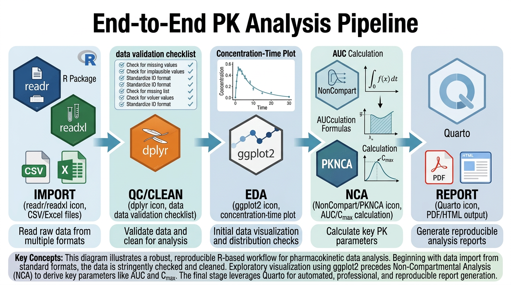
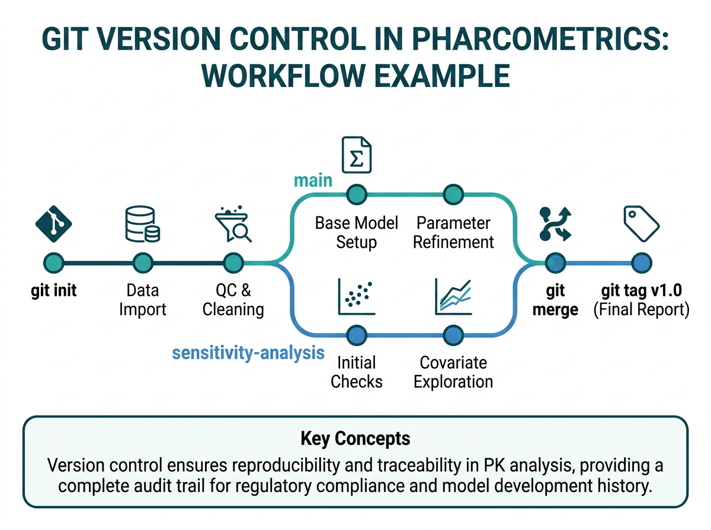
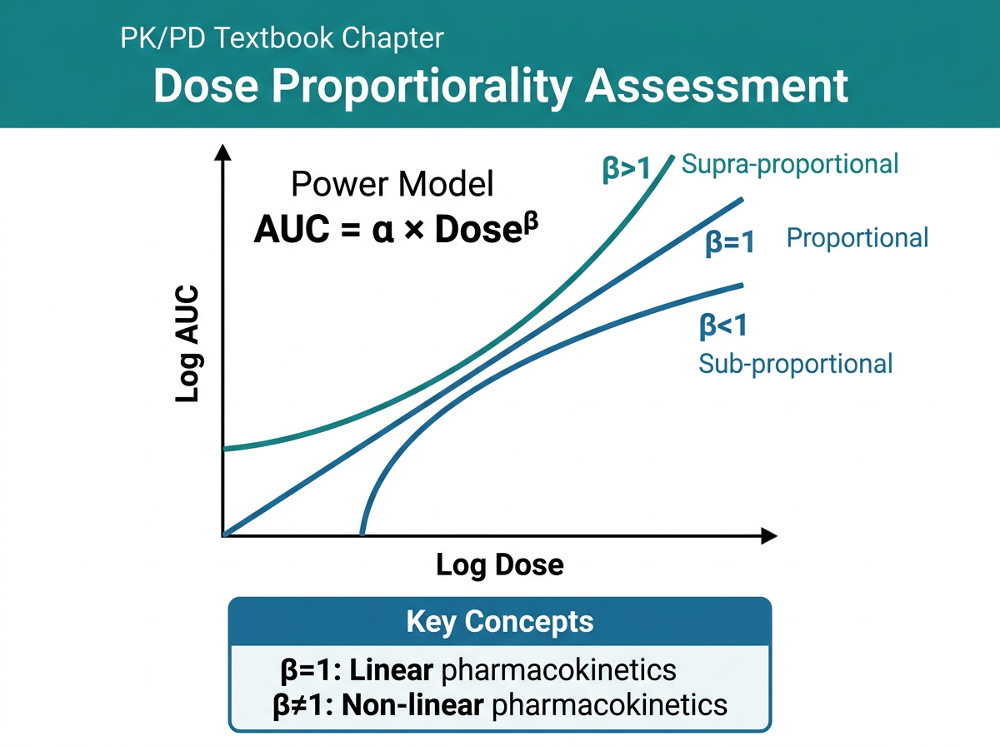

# 이 장에서 사용하는 패키지
library(tidyverse) # 데이터 처리 및 시각화
library(NonCompart) # 비구획분석
library(gt) # 출판 품질 테이블
library(scales) # 축 스케일링
library(patchwork) # 그래프 조합9 PK 데이터 분석 종합 실습
이 장에서는 지금까지 학습한 모든 내용을 통합하여, 원시 데이터에서 최종 보고서까지의 완전한 PK 분석 파이프라인(end-to-end pipeline)을 구축합니다. 재현 가능한 분석(reproducible analysis)의 원칙에 따라 Quarto 문서와 Git 버전 관리를 활용하며, 건선 치료에 사용되는 Adalimumab Phase I 시험의 종합 분석을 실습합니다.
9.1 PK 분석 워크플로우 총정리

PK 데이터 분석의 전체 워크플로우는 다음과 같이 5단계로 요약할 수 있습니다:
Raw Data → QC (Quality Control) → EDA (Exploratory Data Analysis) → NCA → Report각 단계를 상세히 살펴보겠습니다.
9.1.1 1단계: 원시 데이터 (Raw Data)
- 임상시험 데이터베이스 또는 Excel/CSV 파일에서 데이터 수집
- 투약 기록(dosing records), 농도 데이터(concentration data), 인구통계(demographics) 병합
- NONMEM 형식 또는 분석 가능한 형태로 변환
9.1.2 2단계: 품질 관리 (Quality Control, QC)
- 데이터 무결성 확인: 결측값, 이상값, 중복, 단위 일관성
- 프로토콜 준수 확인: 채혈 시점, 투약 용량, 대상자 수
- 프로그래밍적 QC: 자동화된 검증 함수를 통한 체계적 확인
- QC 결과 문서화
9.1.3 3단계: 탐색적 데이터 분석 (Exploratory Data Analysis, EDA)
- 개인별 농도-시간 프로파일(spaghetti plot)
- 용량군별 평균 프로파일(mean ± SD/SE)
- 용량 정규화 프로파일(dose-normalized profile)
- 공변량과 PK의 관계 탐색
- 반로그(semi-log) 플롯을 통한 소실상 확인
9.1.4 4단계: 비구획분석 (Non-Compartmental Analysis, NCA)
- 주요 PK 파라미터 산출: Cmax, Tmax, AUC, t1/2, CL/F, Vz/F
- Lambda_z 추정의 적절성 검토
- 외삽 비율 확인
- 용량 비례성 평가
9.1.5 5단계: 보고서 (Report)
- Quarto 문서를 활용한 재현 가능한 보고서
- 표준화된 테이블과 그래프
- 결론 및 권고 사항
중요워크플로우의 핵심 원칙
모든 단계는 다음 원칙을 따라야 합니다:
- 재현 가능성(Reproducibility): 모든 과정이 R 코드로 기록되어 동일한 결과를 재현할 수 있어야 합니다.
- 추적 가능성(Traceability): 원시 데이터에서 최종 결과까지의 경로를 추적할 수 있어야 합니다.
- 투명성(Transparency): 분석 방법과 가정이 명확히 문서화되어야 합니다.
- 버전 관리(Version Control): 코드와 문서의 변경 이력이 기록되어야 합니다.
9.2 재현 가능한 분석 보고서: Quarto
9.2.1 Quarto란
Quarto는 R, Python, Julia 등 다양한 프로그래밍 언어의 코드와 텍스트를 하나의 문서에 통합할 수 있는 오픈소스 출판 시스템입니다. R Markdown의 차세대 버전으로, 다음과 같은 출력 형식을 지원합니다:
- HTML 문서 및 웹사이트
- PDF 문서 (LaTeX 기반)
- Word 문서
- 프레젠테이션 (Reveal.js, PowerPoint)
- 책(Book) — 이 교재가 바로 Quarto Book 형식입니다
9.2.2 PK 분석 보고서 템플릿
# Quarto 문서의 YAML 헤더 예시
# 아래 내용은 .qmd 파일의 맨 위에 작성합니다
# ---
# title: "Apremilast Phase I SAD: PK Analysis Report"
# author: "PK Analyst"
# date: today
# format:
# html:
# toc: true
# toc-depth: 3
# code-fold: true
# code-tools: true
# theme: cosmo
# pdf:
# toc: true
# documentclass: article
# geometry:
# - margin=1in
# execute:
# echo: true
# warning: false
# message: false
# ---9.2.3 Quarto 문서의 핵심 요소
# 1. 코드 청크(Code Chunk) 옵션
# Quarto에서는 YAML 형식의 청크 옵션을 사용합니다
# ```{r}
# #| label: fig-pk-profile
# #| fig-cap: "Individual PK Profiles"
# #| fig-width: 8
# #| fig-height: 6
# #| echo: false
#
# ggplot(...) + ...
# ```
# 2. 교차 참조(Cross-reference)
# 그래프: @fig-pk-profile
# 테이블: @tbl-nca-summary
# 수식: @eq-auc-formula
# 섹션: @sec-methods
# 3. Callout Blocks
# :::{.callout-note}
# 중요한 참고 사항
# :::
힌트Quarto 보고서 작성 팁
- 코드 접기(code-fold):
code-fold: true를 설정하면, 독자가 코드를 필요할 때만 펼쳐 볼 수 있습니다. - 캐싱(caching): 시간이 오래 걸리는 분석은
#| cache: true를 설정하여 결과를 캐싱합니다. - 매개변수화(parameterization):
params:YAML 옵션으로 분석을 매개변수화하면, 같은 보고서로 다른 데이터셋을 분석할 수 있습니다. - 자동 날짜:
date: today를 사용하면 렌더링 시 현재 날짜가 자동 입력됩니다.
9.3 Version Control: Git 기초

9.3.1 Git이란
Git은 코드와 문서의 변경 이력을 추적하는 분산 버전 관리 시스템(Distributed Version Control System)입니다. PK 분석에서 Git을 사용해야 하는 이유:
- 변경 이력 추적: “어제 코드가 작동했는데 오늘은 안 됨”의 문제를 해결
- 협업: 여러 분석자가 동시에 작업할 수 있음
- 되돌리기(Rollback): 잘못된 변경을 안전하게 되돌릴 수 있음
- 감사 추적(Audit Trail): 누가, 언제, 무엇을 변경했는지 기록
- 규제 요건: FDA 21 CFR Part 11 등 전자 기록 관련 규정 준수에 도움
9.3.2 기본 Git 명령어
# 아래는 터미널(Terminal)에서 실행하는 Git 명령어입니다
# RStudio에서는 Terminal 탭 또는 Git 탭을 사용할 수 있습니다
# --- 초기 설정 (최초 1회) ---
# git config --global user.name "Your Name"
# git config --global user.email "your@email.com"
# --- 저장소 초기화 ---
# git init # 현재 폴더를 Git 저장소로 초기화
# git clone <url> # 원격 저장소 복제
# --- 기본 워크플로우 ---
# git status # 현재 상태 확인 (변경된 파일 목록)
# git add <파일명> # 스테이징 영역에 추가
# git add . # 모든 변경 파일 추가
# git commit -m "메시지" # 변경사항 커밋 (스냅샷 저장)
# --- 변경 확인 ---
# git diff # 변경 내용 확인 (스테이징 전)
# git diff --staged # 스테이징된 변경 내용 확인
# git log # 커밋 이력 확인
# git log --oneline # 간략한 커밋 이력9.3.3 PK 분석 프로젝트의 Git 워크플로우
PK 분석 프로젝트에서의 전형적인 Git 사용 패턴:
# 프로젝트 구조
# pk_analysis/
# ├── data/
# │ ├── raw/ # 원시 데이터 (변경 금지)
# │ │ ├── dosing.csv
# │ │ ├── concentrations.csv
# │ │ └── demographics.csv
# │ └── derived/ # 가공된 데이터
# │ └── pk_dataset_v01.csv
# ├── R/
# │ ├── 01_data_assembly.R # 데이터 구축
# │ ├── 02_qc.R # 품질 관리
# │ ├── 03_eda.R # 탐색적 분석
# │ ├── 04_nca.R # NCA
# │ └── functions/ # 재사용 함수
# │ ├── qc_functions.R
# │ └── nca_helpers.R
# ├── output/
# │ ├── figures/ # 그래프 파일
# │ └── tables/ # 테이블 파일
# ├── reports/
# │ └── pk_report.qmd # Quarto 보고서
# ├── .gitignore # Git 추적 제외 파일 목록
# └── README.md9.3.4 .gitignore 설정
# .gitignore 파일 내용 예시
# (아래 내용을 .gitignore 파일에 작성)
# R 관련
# .Rhistory
# .Rdata
# .RDataTmp
# .Ruserdata
# *.Rproj.user/
# 대용량 데이터 파일 (필요 시)
# data/raw/*.xlsx
# data/raw/*.sas7bdat
# 출력 파일 (재생성 가능)
# output/figures/*.png
# output/figures/*.pdf
# output/tables/*.html
# 운영체제 관련
# .DS_Store # macOS
# Thumbs.db # Windows
경고Git 사용 시 주의사항
- 원시 데이터를 Git에 포함할지 신중히 결정하세요: 환자 데이터가 포함된 경우 GitHub 등 공개 저장소에 올리면 안 됩니다.
.gitignore에 추가하거나, 비공개 저장소를 사용하세요. - 의미 있는 커밋 메시지를 작성하세요: “update” 대신 “Add BLQ handling using M7 method”처럼 구체적으로.
- 자주 커밋하세요: 작은 변경 단위로 자주 커밋하면 문제가 생겼을 때 되돌리기 쉽습니다.
- 대용량 파일은 Git LFS(Large File Storage)를 사용하세요: Excel, SAS 데이터셋 등이 큰 경우.
9.3.5 Git 커밋 메시지 관례
PK 분석 프로젝트에서 유용한 커밋 메시지 형식:
<유형>: <변경 내용 요약>
[상세 설명 (선택)]
유형 예시:
- data: 데이터 관련 변경 (데이터 구축, QC 등)
- analysis: 분석 코드 변경 (NCA, EDA 등)
- report: 보고서 변경
- fix: 버그 수정
- refactor: 코드 구조 개선 (기능 변경 없이)
- docs: 문서 변경# 커밋 메시지 예시:
# git commit -m "data: Build NONMEM dataset from raw Excel files"
# git commit -m "analysis: Add NCA with NonCompart, linear-up/log-down"
# git commit -m "fix: Correct TAD calculation for multiple dose data"
# git commit -m "report: Add dose proportionality assessment section"
# git commit -m "refactor: Extract QC checks into separate function file"9.4 종합 사례: Adalimumab 건선 Phase I
9.4.1 시나리오 설명
이 절에서는 다음과 같은 가상의 임상시험을 분석합니다:
시험명: Adalimumab Biosimilar Phase I Dose-Ranging Study in Healthy Volunteers
시험 설계:
- 대상: 건강한 성인 남녀 자원자 24명
- 용량군: 40mg, 80mg, 160mg SC 단회 투여 (각 8명)
- 무작위 배정: 3:3:3 비율
- 채혈 스케줄: 투약 전(Day 1), Day 2, 3, 5, 7, 10, 14, 21, 28, 42, 56, 70일
- 분석법: ELISA, LLOQ = 0.05 μg/mL
- 1차 목표: PK 파라미터 산출 및 용량 비례성 평가
- 2차 목표: 안전성 및 면역원성 평가
9.4.2 분석 목표
- 개인별 및 용량군별 PK 프로파일 시각화
- 주요 NCA 파라미터 산출 (Cmax, Tmax, AUClast, AUCinf, t1/2, CL/F, Vz/F)
- 용량 비례성(dose proportionality) 평가
- 결과 요약 테이블 및 그래프 생성
9.5 End-to-end R 분석 파이프라인
9.5.1 Step 1: 원시 데이터 읽기
# ===================================================
# Step 1: 원시 데이터 읽기 (Data Import)
# ===================================================
# 실제 프로젝트에서는 read_csv() 또는 read_excel()로 읽습니다
# 여기서는 시뮬레이션 데이터를 직접 생성합니다
set.seed(2024)
# --- 인구통계 데이터 ---
n_per_group <- 8
n_total <- n_per_group * 3
demographics <- tibble(
SUBJID = sprintf("ADA-%03d", 1:n_total),
AGE = round(rnorm(n_total, 35, 8)),
SEX = sample(c("M", "F"), n_total, replace = TRUE, prob = c(0.6, 0.4)),
WEIGHT = round(rnorm(n_total, 72, 12), 1),
HEIGHT = round(rnorm(n_total, 170, 9), 1),
RACE = sample(c("Asian", "White", "Black"), n_total, replace = TRUE,
prob = c(0.5, 0.35, 0.15)),
DOSE_GROUP = rep(c(40, 80, 160), each = n_per_group)
) |>
mutate(
AGE = pmax(AGE, 20) |> pmin(55),
BMI = round(WEIGHT / (HEIGHT / 100)^2, 1)
)
# --- 투약 데이터 ---
dosing <- tibble(
SUBJID = demographics$SUBJID,
DOSE_MG = demographics$DOSE_GROUP,
DOSE_DATE = as.Date("2024-06-01"),
DOSE_TIME = "08:00",
ROUTE = "SC",
SITE = sample(c("Abdomen", "Thigh"), n_total, replace = TRUE)
)
# --- 농도 데이터 생성 ---
# Adalimumab PK: 1-구획 모형, SC 투여
# 전형적 파라미터: ka=0.3/day, CL/F=12 mL/day, Vz/F=8000 mL
sampling_days <- c(0, 1, 2, 4, 6, 9, 13, 20, 27, 41, 55, 69)
pk_raw <- expand_grid(
SUBJID = demographics$SUBJID,
SAMPLE_DAY = sampling_days
) |>
left_join(demographics |> select(SUBJID, DOSE_GROUP, WEIGHT), by = "SUBJID") |>
group_by(SUBJID) |>
mutate(
# 개인별 PK 파라미터 (변동 포함)
ka_i = 0.30 * exp(rnorm(1, 0, 0.35)), # 1/day
CL_F_i = 12.0 * exp(rnorm(1, 0, 0.30)), # mL/day
Vz_F_i = 8000 * exp(rnorm(1, 0, 0.20)), # mL
ke_i = CL_F_i / Vz_F_i, # 1/day
F_sc = 0.64,
# 농도 계산 (μg/mL)
DOSE_UG = DOSE_GROUP * 1000, # mg → μg
CONC_TRUE = (DOSE_UG * F_sc * ka_i / (Vz_F_i * (ka_i - ke_i))) *
(exp(-ke_i * SAMPLE_DAY) - exp(-ka_i * SAMPLE_DAY)),
CONC_TRUE = pmax(CONC_TRUE, 0),
# 잔차 변동 (비례 오차 모형)
CONC_OBS = CONC_TRUE * exp(rnorm(n(), 0, 0.12)),
CONC_OBS = round(pmax(CONC_OBS, 0), 3),
# BLQ 처리 (LLOQ = 0.05 μg/mL)
LLOQ = 0.05,
BLQ = as.integer(CONC_OBS < LLOQ),
CONC_REPORT = if_else(BLQ == 1, "BLQ", as.character(CONC_OBS))
) |>
ungroup() |>
select(SUBJID, DOSE_GROUP, SAMPLE_DAY, CONC_OBS, CONC_REPORT, BLQ, LLOQ)
# 데이터 확인
cat("=== 데이터 크기 ===\n")
cat("인구통계:", nrow(demographics), "명\n")
cat("투약 기록:", nrow(dosing), "건\n")
cat("농도 데이터:", nrow(pk_raw), "건\n")
cat("BLQ 건수:", sum(pk_raw$BLQ), "건 (",
round(100 * mean(pk_raw$BLQ), 1), "%)\n")9.5.2 Step 2: 데이터 정제 및 QC
# ===================================================
# Step 2: 데이터 정제 및 품질 관리 (Data Cleaning & QC)
# ===================================================
# --- 2a. 분석용 데이터셋 구축 ---
pk_analysis <- pk_raw |>
# BLQ 처리 (M1: BLQ → 0, pre-dose는 이미 0)
mutate(
DV = case_when(
BLQ == 1 & SAMPLE_DAY == 0 ~ 0, # Pre-dose BLQ → 0
BLQ == 1 ~ 0, # 기타 BLQ → 0 (M1)
TRUE ~ CONC_OBS
),
ID = as.numeric(factor(SUBJID)),
TIME = SAMPLE_DAY,
DOSE = DOSE_GROUP
) |>
select(ID, SUBJID, TIME, DV, DOSE, BLQ)
# --- 2b. QC 함수 ---
run_qc_checks <- function(data, demographics) {
qc_results <- list()
# Check 1: 대상자 수
qc_results$n_subjects <- n_distinct(data$ID)
qc_results$n_expected <- nrow(demographics)
qc_results$subjects_match <- qc_results$n_subjects == qc_results$n_expected
# Check 2: 시점 수 확인
time_counts <- data |>
group_by(ID) |>
summarise(n_times = n(), .groups = "drop")
qc_results$min_timepoints <- min(time_counts$n_times)
qc_results$max_timepoints <- max(time_counts$n_times)
qc_results$expected_timepoints <- length(sampling_days)
# Check 3: 용량군별 대상자 수
qc_results$dose_distribution <- data |>
distinct(ID, DOSE) |>
count(DOSE, name = "n_subjects")
# Check 4: 음수 농도
qc_results$n_negative_dv <- sum(data$DV < 0, na.rm = TRUE)
# Check 5: 결측 농도
qc_results$n_missing_dv <- sum(is.na(data$DV))
# Check 6: BLQ 요약
qc_results$blq_summary <- data |>
group_by(DOSE) |>
summarise(
n_total = n(),
n_blq = sum(BLQ == 1),
pct_blq = round(100 * n_blq / n_total, 1),
.groups = "drop"
)
# 출력
cat("========================================\n")
cat(" QC Report: PK Analysis Data \n")
cat("========================================\n\n")
cat("1. Subject Count\n")
cat(" Expected:", qc_results$n_expected, " Found:", qc_results$n_subjects)
cat(if (qc_results$subjects_match) " [PASS]\n\n" else " [FAIL]\n\n")
cat("2. Timepoints per Subject\n")
cat(" Expected:", qc_results$expected_timepoints, "\n")
cat(" Range:", qc_results$min_timepoints, "-", qc_results$max_timepoints)
cat(if (qc_results$min_timepoints == qc_results$expected_timepoints) " [PASS]\n\n"
else " [CHECK]\n\n")
cat("3. Dose Group Distribution\n")
print(qc_results$dose_distribution)
cat("\n")
cat("4. Negative DV Values:", qc_results$n_negative_dv)
cat(if (qc_results$n_negative_dv == 0) " [PASS]\n\n" else " [FAIL]\n\n")
cat("5. Missing DV Values:", qc_results$n_missing_dv, "\n\n")
cat("6. BLQ Summary by Dose\n")
print(qc_results$blq_summary)
invisible(qc_results)
}
# QC 실행
qc <- run_qc_checks(pk_analysis, demographics)# --- 2c. 이상값 탐지 ---
detect_outliers <- function(data) {
# 각 시점별, 용량군별 이상값 탐지
outlier_flags <- data |>
filter(DV > 0) |>
group_by(DOSE, TIME) |>
mutate(
mean_dv = mean(DV, na.rm = TRUE),
sd_dv = sd(DV, na.rm = TRUE),
z_score = (DV - mean_dv) / sd_dv,
is_outlier = abs(z_score) > 3
) |>
ungroup()
n_outliers <- sum(outlier_flags$is_outlier, na.rm = TRUE)
cat("\n이상값 탐지 결과:", n_outliers, "개 (|z| > 3 기준)\n")
if (n_outliers > 0) {
cat("\n이상값 상세:\n")
outlier_flags |>
filter(is_outlier) |>
select(ID, DOSE, TIME, DV, z_score) |>
print()
}
invisible(outlier_flags)
}
outlier_check <- detect_outliers(pk_analysis)9.5.3 Step 3: 탐색적 데이터 분석 (EDA)
# ===================================================
# Step 3: 탐색적 데이터 분석 (EDA)
# ===================================================
# --- 3a. Spaghetti Plot (개인별 농도-시간 프로파일) ---
p_spaghetti <- ggplot(
pk_analysis |> filter(DV > 0),
aes(x = TIME, y = DV, group = ID, color = factor(DOSE))
) +
geom_line(alpha = 0.5) +
geom_point(size = 1.5, alpha = 0.7) +
facet_wrap(~DOSE, labeller = labeller(DOSE = function(x) paste0(x, " mg")),
ncol = 3) +
labs(
x = "Time (days)",
y = "Adalimumab Concentration (μg/mL)",
color = "Dose (mg)",
title = "Individual PK Profiles: Linear Scale"
) +
theme_bw() +
theme(legend.position = "none")
p_spaghetti
# --- 3b. Semi-log Spaghetti Plot ---
p_spaghetti_log <- ggplot(
pk_analysis |> filter(DV > 0),
aes(x = TIME, y = DV, group = ID, color = factor(DOSE))
) +
geom_line(alpha = 0.5) +
geom_point(size = 1.5, alpha = 0.7) +
scale_y_log10(labels = label_number()) +
facet_wrap(~DOSE, labeller = labeller(DOSE = function(x) paste0(x, " mg")),
ncol = 3) +
labs(
x = "Time (days)",
y = "Adalimumab Concentration (μg/mL) [log scale]",
color = "Dose (mg)",
title = "Individual PK Profiles: Semi-log Scale"
) +
theme_bw() +
theme(legend.position = "none")
p_spaghetti_log# --- 3c. Mean Profile (평균 농도-시간 프로파일) ---
pk_mean <- pk_analysis |>
filter(DV > 0) |>
group_by(DOSE, TIME) |>
summarise(
N = n(),
Mean = mean(DV),
SD = sd(DV),
SE = SD / sqrt(N),
GeoMean = exp(mean(log(DV))),
.groups = "drop"
)
p_mean <- ggplot(pk_mean, aes(x = TIME, y = Mean, color = factor(DOSE),
fill = factor(DOSE))) +
geom_ribbon(aes(ymin = pmax(Mean - SD, 0), ymax = Mean + SD), alpha = 0.15,
color = NA) +
geom_line(linewidth = 1) +
geom_point(size = 2.5) +
geom_errorbar(aes(ymin = pmax(Mean - SD, 0), ymax = Mean + SD),
width = 1, alpha = 0.5) +
labs(
x = "Time (days)",
y = "Adalimumab Concentration (μg/mL)",
color = "Dose (mg)",
fill = "Dose (mg)",
title = "Mean (± SD) PK Profiles by Dose Group"
) +
theme_bw() +
theme(legend.position = "bottom")
p_mean
# --- 3d. Semi-log Mean Profile ---
p_mean_log <- ggplot(pk_mean, aes(x = TIME, y = GeoMean, color = factor(DOSE))) +
geom_line(linewidth = 1) +
geom_point(size = 2.5) +
scale_y_log10(labels = label_number()) +
labs(
x = "Time (days)",
y = "Adalimumab Concentration (μg/mL) [log scale]",
color = "Dose (mg)",
title = "Geometric Mean PK Profiles (Semi-log Scale)"
) +
theme_bw() +
theme(legend.position = "bottom")
p_mean_log# --- 3e. Dose-Normalized Profile (용량 정규화) ---
p_dose_norm <- pk_analysis |>
filter(DV > 0) |>
mutate(DV_norm = DV / DOSE * 40) |> # 40mg 기준으로 정규화
ggplot(aes(x = TIME, y = DV_norm, group = ID, color = factor(DOSE))) +
geom_line(alpha = 0.3) +
geom_point(size = 1, alpha = 0.5) +
labs(
x = "Time (days)",
y = "Dose-Normalized Concentration (μg/mL per 40mg)",
color = "Dose (mg)",
title = "Dose-Normalized Individual PK Profiles",
subtitle = "Overlapping profiles suggest dose proportionality"
) +
theme_bw() +
theme(legend.position = "bottom")
p_dose_norm
# --- 3f. patchwork를 이용한 그래프 조합 ---
# 여러 그래프를 하나의 figure로 조합
combined_plot <- (p_spaghetti | p_spaghetti_log) /
(p_mean | p_dose_norm) +
plot_annotation(
title = "Adalimumab Phase I: Exploratory PK Analysis",
subtitle = "40mg, 80mg, 160mg SC single dose in healthy volunteers",
tag_levels = "A"
)
combined_plot
노트EDA에서 확인해야 할 핵심 사항
- 프로파일의 일관성: 같은 용량군 내 대상자 간 프로파일이 유사한가?
- 이상 프로파일: 비정상적으로 높거나 낮은 농도를 보이는 대상자가 있는가?
- 용량 비례성의 시각적 평가: 용량 정규화 프로파일이 겹치는가?
- 소실상의 특성: 반로그 플롯에서 말기의 기울기가 일정한가? (단일 지수적 감소)
- BLQ 패턴: BLQ가 주로 어느 시점에서 발생하는가?
9.5.4 Step 4: NCA 수행
# ===================================================
# Step 4: 비구획분석 (NCA)
# ===================================================
# --- 4a. NCA 수행 (NonCompart) ---
# BLQ가 아닌 데이터만 사용
pk_for_nca <- pk_analysis |>
filter(BLQ == 0 | TIME == 0) |>
select(ID, TIME, DV, DOSE)
# 용량 정보 추출
dose_info <- pk_for_nca |>
distinct(ID, DOSE) |>
arrange(ID) |>
mutate(DOSE_UG = DOSE * 1000) # μg 단위
# tblNCA 실행
nca_results <- NonCompart::tblNCA(
pk_for_nca,
key = "ID",
colTime = "TIME",
colConc = "DV",
dose = dose_info$DOSE_UG,
adm = "Extravascular",
dur = 0,
doseUnit = "ug",
timeUnit = "day",
concUnit = "ug/mL"
)
nca_df <- as_tibble(nca_results) |>
mutate(
ID = as.numeric(ID),
across(c(CMAX, TMAX, AUCLST, AUCIFP, AUCPEO,
LAMZHL, LAMZ, LAMZADJ, LAMZNPT,
CLFO, VZFO, MRTLST, MRTIFO),
as.numeric)
) |>
left_join(dose_info |> select(ID, DOSE), by = "ID")
# --- 4b. NCA 결과 검토 ---
# 외삽 비율 확인
cat("=== AUC 외삽 비율 확인 ===\n")
nca_df |>
select(ID, DOSE, AUCIFP, AUCLST, AUCPEO) |>
mutate(
Extrap_pct = round(AUCPEO, 1),
Flag = if_else(AUCPEO > 20, "WARNING: >20%", "OK")
) |>
print(n = 24)
# Lambda_z 품질 확인
cat("\n=== Lambda_z 추정 품질 ===\n")
nca_df |>
select(ID, DOSE, LAMZ, LAMZHL, LAMZADJ, LAMZNPT) |>
mutate(
Flag = case_when(
is.na(LAMZADJ) ~ "FAILED",
LAMZADJ < 0.80 ~ "WARNING: adj R² < 0.80",
LAMZNPT < 3 ~ "WARNING: < 3 points",
TRUE ~ "OK"
)
) |>
print(n = 24)# --- 4c. 개인별 NCA 파라미터 테이블 ---
individual_nca <- nca_df |>
select(ID, DOSE, CMAX, TMAX, AUCLST, AUCIFP, LAMZHL, CLFO, VZFO, AUCPEO) |>
mutate(
CMAX = round(CMAX, 3),
TMAX = round(TMAX, 1),
AUCLST = round(AUCLST, 1),
AUCIFP = round(AUCIFP, 1),
LAMZHL = round(LAMZHL, 1),
CLFO = round(CLFO, 1),
VZFO = round(VZFO, 0),
AUCPEO = round(AUCPEO, 1)
)
individual_nca |>
gt() |>
tab_header(
title = "Individual NCA Parameters",
subtitle = "Adalimumab SC Single Dose"
) |>
cols_label(
ID = "Subject",
DOSE = "Dose (mg)",
CMAX = md("C~max~<br>(μg/mL)"),
TMAX = md("T~max~<br>(days)"),
AUCLST = md("AUC~last~<br>(μg·day/mL)"),
AUCIFP = md("AUC~inf~<br>(μg·day/mL)"),
LAMZHL = md("t~1/2~<br>(days)"),
CLFO = md("CL/F<br>(mL/day)"),
VZFO = md("V~z~/F<br>(mL)"),
AUCPEO = md("%AUC~extrap~")
) |>
tab_style(
style = cell_fill(color = "#fff3cd"),
locations = cells_body(columns = AUCPEO, rows = AUCPEO > 20)
) |>
tab_footnote(
footnote = "Yellow highlighting: AUC extrapolation > 20%",
locations = cells_column_labels(columns = AUCPEO)
)9.5.5 Step 5: 결과 테이블 생성
# ===================================================
# Step 5: 결과 요약 테이블 (Summary Tables)
# ===================================================
# --- 5a. 용량군별 NCA 요약 ---
format_mean_sd <- function(x, digits = 1) {
m <- round(mean(x, na.rm = TRUE), digits)
s <- round(sd(x, na.rm = TRUE), digits)
paste0(m, " (", s, ")")
}
format_median_range <- function(x, digits = 1) {
med <- round(median(x, na.rm = TRUE), digits)
mn <- round(min(x, na.rm = TRUE), digits)
mx <- round(max(x, na.rm = TRUE), digits)
paste0(med, " [", mn, ", ", mx, "]")
}
format_geo_mean_cv <- function(x) {
log_x <- log(x[x > 0 & !is.na(x)])
gm <- round(exp(mean(log_x)), 2)
cv <- round(100 * sqrt(exp(var(log_x)) - 1), 1)
paste0(gm, " (", cv, "%)")
}
nca_summary_table <- nca_df |>
group_by(DOSE) |>
summarise(
N = n(),
Cmax_mean_sd = format_mean_sd(CMAX, 3),
Cmax_geo_cv = format_geo_mean_cv(CMAX),
Tmax_med_range = format_median_range(TMAX, 1),
AUClast_mean_sd = format_mean_sd(AUCLST, 1),
AUClast_geo_cv = format_geo_mean_cv(AUCLST),
AUCinf_mean_sd = format_mean_sd(AUCIFP, 1),
AUCinf_geo_cv = format_geo_mean_cv(AUCIFP),
t_half_mean_sd = format_mean_sd(LAMZHL, 1),
CLF_mean_sd = format_mean_sd(CLFO, 1),
VzF_mean_sd = format_mean_sd(VZFO, 0),
.groups = "drop"
)
# gt 테이블
nca_summary_table |>
gt() |>
tab_header(
title = md("**Summary of Pharmacokinetic Parameters**"),
subtitle = md("Adalimumab SC Single Dose — Mean (SD) and Geometric Mean (CV%)")
) |>
cols_label(
DOSE = "Dose (mg)",
N = "N",
Cmax_mean_sd = md("C~max~<br>Mean (SD)<br>μg/mL"),
Cmax_geo_cv = md("C~max~<br>Geo Mean (CV%)<br>μg/mL"),
Tmax_med_range = md("T~max~<br>Median [Range]<br>days"),
AUClast_mean_sd = md("AUC~last~<br>Mean (SD)<br>μg·day/mL"),
AUClast_geo_cv = md("AUC~last~<br>Geo Mean (CV%)<br>μg·day/mL"),
AUCinf_mean_sd = md("AUC~inf~<br>Mean (SD)<br>μg·day/mL"),
AUCinf_geo_cv = md("AUC~inf~<br>Geo Mean (CV%)<br>μg·day/mL"),
t_half_mean_sd = md("t~1/2~<br>Mean (SD)<br>days"),
CLF_mean_sd = md("CL/F<br>Mean (SD)<br>mL/day"),
VzF_mean_sd = md("V~z~/F<br>Mean (SD)<br>mL")
) |>
tab_source_note("NCA: Linear-up/Log-down trapezoidal method. NonCompart R package.") |>
tab_source_note("Geometric Mean and CV% calculated from log-transformed data.") |>
tab_options(
table.font.size = 11,
heading.title.font.size = 14,
column_labels.font.size = 10,
table.width = pct(100)
)# --- 5b. 인구통계 요약 테이블 ---
demo_summary <- demographics |>
group_by(DOSE_GROUP) |>
summarise(
N = n(),
Age_mean_sd = format_mean_sd(AGE, 1),
Weight_mean_sd = format_mean_sd(WEIGHT, 1),
BMI_mean_sd = format_mean_sd(BMI, 1),
Male_n_pct = paste0(sum(SEX == "M"), " (", round(100 * mean(SEX == "M")), "%)"),
Asian_n_pct = paste0(sum(RACE == "Asian"), " (", round(100 * mean(RACE == "Asian")), "%)"),
.groups = "drop"
)
demo_summary |>
gt() |>
tab_header(
title = md("**Demographic Summary**"),
subtitle = "Mean (SD) or N (%)"
) |>
cols_label(
DOSE_GROUP = "Dose Group (mg)",
N = "N",
Age_mean_sd = "Age (years)",
Weight_mean_sd = "Weight (kg)",
BMI_mean_sd = md("BMI (kg/m²)"),
Male_n_pct = "Male",
Asian_n_pct = "Asian"
)9.5.6 Step 6: Quarto 보고서 템플릿
# ===================================================
# Step 6: Quarto 보고서 템플릿
# ===================================================
# 아래는 완성된 Quarto 보고서의 구조 예시입니다
# 실제 사용 시 .qmd 파일로 저장합니다
quarto_template <- '
---
title: "Adalimumab Phase I: Pharmacokinetic Analysis Report"
author: "PK Analysis Team"
date: today
format:
html:
toc: true
toc-depth: 3
code-fold: true
number-sections: true
theme: cosmo
self-contained: true
pdf:
toc: true
number-sections: true
documentclass: article
execute:
echo: false
warning: false
message: false
---
# Executive Summary
This report presents the pharmacokinetic (PK) analysis of Adalimumab
following single subcutaneous doses of 40 mg, 80 mg, and 160 mg
in healthy volunteers.
# Methods
## Study Design
- 24 healthy volunteers randomized to 3 dose groups (8 per group)
- Single SC dose administration
- Serial blood sampling over 70 days
## Bioanalytical Method
- ELISA assay for serum Adalimumab
- LLOQ: 0.05 μg/mL
## Statistical Analysis
- NCA: Linear-up/Log-down trapezoidal method (NonCompart R package)
- Dose proportionality: Power model assessment
# Results
## Demographics
[Insert demographic table]
## PK Profiles
[Insert individual and mean PK plots]
## NCA Parameters
[Insert summary NCA table]
## Dose Proportionality
[Insert dose proportionality analysis]
# Conclusions
[Summary of findings]
# Appendix
[Individual NCA parameters, listings]
'
cat("Quarto 보고서 템플릿이 생성되었습니다.\n")
cat("위 템플릿을 .qmd 파일로 저장하고 코드 청크를 추가하여 사용하세요.\n")9.6 용량 비례성 평가

9.6.1 용량 비례성이란
용량 비례성(Dose Proportionality)이란 약물의 용량을 증가시킬 때 체내 노출(AUC, Cmax 등)이 비례적으로 증가하는 것을 의미합니다. 즉, 용량을 2배로 하면 AUC도 2배가 되어야 합니다.
수학적으로, 용량 비례적 PK는 다음 관계를 만족합니다:
\[ AUC = a \cdot Dose^\beta, \quad \text{여기서 } \beta = 1 \text{이면 완전한 용량 비례} \]
9.6.2 Power Model 접근법
Power model은 용량 비례성을 평가하는 가장 널리 사용되는 방법입니다:
\[ \ln(PK) = \alpha + \beta \cdot \ln(Dose) + \epsilon \]
여기서: - \(\beta = 1\): 완전한 용량 비례 - \(\beta > 1\): 용량 증가보다 노출이 더 빠르게 증가 (수퍼비례, supra-proportional) - \(\beta < 1\): 용량 증가보다 노출이 느리게 증가 (서브비례, sub-proportional)
판정 기준: \(\beta\)의 90% 신뢰구간이 (0.80, 1.25) 이내이면 용량 비례적으로 판단합니다. 더 엄격한 기준으로 (1 ± \(1/\ln(r)\))을 사용하기도 하며, 여기서 \(r\)은 최대 용량/최소 용량 비율입니다.
# Power Model을 이용한 용량 비례성 평가
dose_prop_analysis <- function(nca_data, param, param_label) {
# 데이터 준비
dp_data <- nca_data |>
filter(!is.na(!!sym(param))) |>
mutate(
ln_PK = log(!!sym(param)),
ln_Dose = log(DOSE)
)
# Power model 적합
model <- lm(ln_PK ~ ln_Dose, data = dp_data)
model_summary <- summary(model)
# Beta와 90% CI
beta <- coef(model)["ln_Dose"]
se_beta <- model_summary$coefficients["ln_Dose", "Std. Error"]
df_model <- model$df.residual
t_crit <- qt(0.95, df_model)
ci_lower <- beta - t_crit * se_beta
ci_upper <- beta + t_crit * se_beta
# 용량 비례성 판정
dp_met <- ci_lower >= 0.80 & ci_upper <= 1.25
# 결과
result <- tibble(
Parameter = param_label,
Beta = round(beta, 3),
SE = round(se_beta, 3),
CI_lower = round(ci_lower, 3),
CI_upper = round(ci_upper, 3),
R_squared = round(model_summary$r.squared, 3),
DP_conclusion = if_else(dp_met,
"Dose proportional",
"Not dose proportional")
)
# 그래프
pred_data <- tibble(
DOSE = seq(min(dp_data$DOSE), max(dp_data$DOSE), length.out = 100),
ln_Dose = log(DOSE)
) |>
mutate(
ln_PK_pred = predict(model, newdata = tibble(ln_Dose = ln_Dose)),
PK_pred = exp(ln_PK_pred)
)
p <- ggplot() +
geom_point(data = dp_data, aes(x = DOSE, y = !!sym(param)),
size = 3, alpha = 0.7) +
geom_line(data = pred_data, aes(x = DOSE, y = PK_pred),
color = "red", linewidth = 1) +
# 완전 용량 비례 참조선
geom_abline(
slope = mean(dp_data[[param]] / dp_data$DOSE),
intercept = 0,
linetype = "dashed", color = "gray50"
) +
annotate("text", x = max(dp_data$DOSE) * 0.7,
y = max(dp_data[[param]]) * 0.3,
label = paste0("β = ", round(beta, 3),
"\n90% CI: (", round(ci_lower, 3),
", ", round(ci_upper, 3), ")\n",
if_else(dp_met, "Dose Proportional",
"NOT Dose Proportional")),
hjust = 0, size = 3.5,
color = if_else(dp_met, "darkgreen", "red")) +
labs(
x = "Dose (mg)",
y = param_label,
title = paste("Dose Proportionality:", param_label),
subtitle = "Power Model Assessment"
) +
theme_bw()
list(result = result, plot = p)
}
# AUC와 Cmax에 대해 용량 비례성 평가
dp_auc <- dose_prop_analysis(nca_df, "AUCIFP", "AUCinf (μg·day/mL)")
dp_cmax <- dose_prop_analysis(nca_df, "CMAX", "Cmax (μg/mL)")
# 결과 테이블
dp_results <- bind_rows(dp_auc$result, dp_cmax$result)
dp_results
dp_results |>
gt() |>
tab_header(
title = "Dose Proportionality Assessment",
subtitle = "Power Model: ln(PK) = α + β·ln(Dose)"
) |>
cols_label(
Parameter = "PK Parameter",
Beta = "β",
SE = "SE",
CI_lower = "90% CI Lower",
CI_upper = "90% CI Upper",
R_squared = "R²",
DP_conclusion = "Conclusion"
) |>
tab_footnote(
footnote = "Dose proportional if 90% CI of β is within (0.80, 1.25)",
locations = cells_column_labels(columns = DP_conclusion)
)# 용량 비례성 그래프 (patchwork 조합)
dp_combined <- dp_auc$plot | dp_cmax$plot
dp_combined +
plot_annotation(
title = "Adalimumab: Dose Proportionality Assessment",
subtitle = "40mg, 80mg, 160mg SC single dose"
)9.6.3 ANOVA 접근법
Power model 외에 ANOVA 접근법으로도 용량 비례성을 평가할 수 있습니다:
\[ \ln(PK / Dose) = \mu + \beta_{dose} + \epsilon \]
용량 정규화된 PK 파라미터에 대해 ANOVA를 수행하여, 용량군 간 차이가 통계적으로 유의하지 않으면 용량 비례적으로 판단합니다.
# ANOVA 접근법
anova_dp <- function(nca_data, param, param_label) {
dp_data <- nca_data |>
filter(!is.na(!!sym(param))) |>
mutate(
PK_dn = !!sym(param) / DOSE, # 용량 정규화
ln_PK_dn = log(PK_dn),
DOSE_fac = factor(DOSE)
)
# ANOVA
model <- aov(ln_PK_dn ~ DOSE_fac, data = dp_data)
anova_result <- summary(model)
p_value <- anova_result[[1]]["DOSE_fac", "Pr(>F)"]
# 용량군별 요약
dp_summary <- dp_data |>
group_by(DOSE) |>
summarise(
N = n(),
PK_dn_GeoMean = exp(mean(ln_PK_dn)),
PK_dn_CV = 100 * sqrt(exp(var(ln_PK_dn)) - 1),
.groups = "drop"
)
cat("=== ANOVA Dose Proportionality:", param_label, "===\n")
cat("p-value:", round(p_value, 4), "\n")
cat("Conclusion:", if_else(p_value > 0.05,
"Dose proportional (p > 0.05)",
"NOT dose proportional (p ≤ 0.05)"), "\n\n")
cat("Dose-Normalized", param_label, "by Dose Group:\n")
print(dp_summary)
invisible(list(p_value = p_value, summary = dp_summary))
}
anova_auc <- anova_dp(nca_df, "AUCIFP", "AUCinf")
anova_cmax <- anova_dp(nca_df, "CMAX", "Cmax")# 용량 정규화 박스플롯
nca_df |>
filter(!is.na(AUCIFP)) |>
mutate(
AUC_dn = AUCIFP / DOSE,
Cmax_dn = CMAX / DOSE,
DOSE_fac = factor(DOSE)
) |>
pivot_longer(cols = c(AUC_dn, Cmax_dn), names_to = "Parameter",
values_to = "Value_dn") |>
mutate(
Parameter = recode(Parameter,
AUC_dn = "AUCinf / Dose\n(μg·day/mL per mg)",
Cmax_dn = "Cmax / Dose\n(μg/mL per mg)")
) |>
ggplot(aes(x = DOSE_fac, y = Value_dn, fill = DOSE_fac)) +
geom_boxplot(alpha = 0.7, outlier.shape = 21) +
geom_jitter(width = 0.15, size = 2, alpha = 0.6) +
facet_wrap(~Parameter, scales = "free_y") +
labs(
x = "Dose (mg)",
y = "Dose-Normalized Value",
title = "Dose Proportionality: Dose-Normalized PK Parameters",
subtitle = "Similar distributions across dose groups indicate dose proportionality"
) +
theme_bw() +
theme(legend.position = "none")
노트단클론항체의 용량 비례성
단클론항체에서 용량 비례성은 TMDD(Target-Mediated Drug Disposition)의 영향을 받을 수 있습니다:
- 저용량: 표적 매개 소실이 주도 → 상대적으로 낮은 AUC (서브비례 가능)
- 고용량: 표적이 포화되어 선형 PK → AUC가 용량에 비례
따라서 단클론항체에서는 고용량 범위에서 용량 비례적이고, 저용량에서는 서브비례적 PK를 보이는 것이 흔합니다. Adalimumab의 경우 40-160mg 범위에서는 대략적으로 용량 비례적입니다.
9.7 Claude Code 활용 팁
9.7.1 전체 파이프라인 구축 요청
"Adalimumab Phase I 임상시험의 PK 분석 파이프라인을 R로 구축해줘.
데이터:
- 3개 용량군 (40mg, 80mg, 160mg SC), 각 8명
- 채혈 시점: Day 0, 1, 2, 4, 6, 9, 13, 20, 27, 41, 55, 69
- LLOQ: 0.05 μg/mL
필요한 출력:
1. 데이터 QC 보고서
2. EDA 그래프 (spaghetti, mean profile, dose-normalized, semi-log)
3. NCA 결과 (개인별 + 요약)
4. 용량 비례성 평가 (power model)
5. gt 테이블로 정리된 결과
6. 모든 것을 Quarto 보고서로 통합
코드는 재사용 가능한 함수로 구조화해줘."9.7.2 /commit 기능 활용
Claude Code에서 분석 코드를 작성한 후, /commit 명령을 사용하여 변경 사항을 Git에 커밋할 수 있습니다:
/commit
# Claude Code가 변경 사항을 확인하고 적절한 커밋 메시지를 제안합니다
# 예: "analysis: Add NCA pipeline for Adalimumab Phase I data"
힌트Claude Code에서 프로젝트 맥락 활용
Claude Code는 프로젝트의 파일 구조와 기존 코드를 파악하여 일관된 스타일로 코드를 작성합니다:
- 기존 함수 재사용: “이전에 만든 QC 함수를 활용해서 새 데이터셋을 검증해줘”
- 스타일 일관성: “프로젝트의 다른 R 파일과 동일한 코딩 스타일을 사용해줘”
- 의존성 관리: “이 프로젝트에서 이미 사용하고 있는 패키지만 사용해줘”
- 증분적 개발: “이전 세션에서 만든 NCA 코드에 용량 비례성 분석을 추가해줘”
9.7.3 분석 결과 해석 요청
"첨부한 NCA 결과를 해석해줘.
1. 용량군별 PK 파라미터의 주요 특징을 요약해줘
2. 이상값이 있는 대상자를 식별하고 원인을 추정해줘
3. 용량 비례성 평가 결과를 해석해줘
4. 이 데이터를 바탕으로 Phase II 용량 선정에 대한 제안을 해줘
5. 보고서 결론 부분의 초안을 작성해줘"9.8 연습 문제
9.8.1 확인 문제
PK 분석 워크플로우의 5단계를 나열하고, 각 단계에서 수행하는 핵심 작업을 설명하세요.
Quarto 문서에서
code-fold: true옵션의 장점은 무엇이며, PK 분석 보고서에서 이 옵션이 유용한 이유를 설명하세요.Git에서
git add와git commit의 차이점을 설명하고, 왜 두 단계로 나뉘어 있는지 설명하세요.Power model을 사용한 용량 비례성 평가에서, \(\beta\)의 90% 신뢰구간이 (0.85, 1.10)인 경우와 (0.75, 1.15)인 경우 각각 어떻게 해석합니까?
단클론항체에서 저용량 범위에서 용량 비례성이 성립하지 않을 수 있는 이유를 TMDD 개념으로 설명하세요.
9.8.2 R 과제
- 완전한 분석 파이프라인: 이 장의 Adalimumab 데이터를 사용하여, Step 1~Step 6까지의 완전한 분석 파이프라인을 하나의 Quarto 문서(.qmd)로 작성하세요. 다음 섹션을 포함해야 합니다:
- Introduction (시험 설계 요약)
- Methods (분석 방법)
- Results (EDA, NCA, Dose Proportionality)
- Conclusions
- Appendix (개인별 NCA 파라미터, 개인별 PK 그래프)
- 함수 라이브러리 만들기: 이 장과 이전 장에서 사용한 함수들을 정리하여, 재사용 가능한 R 스크립트 파일(
pk_analysis_functions.R)을 만드세요. 다음 함수를 포함해야 합니다:build_nonmem_dataset(): 원시 데이터를 NONMEM 형식으로 변환run_qc_checks(): 데이터 품질 검증detect_outliers(): 이상값 탐지create_pk_plots(): EDA 그래프 생성run_nca_analysis(): NCA 수행 및 결과 요약assess_dose_proportionality(): 용량 비례성 평가- 각 함수에 적절한 문서화(roxygen2 스타일 주석)를 추가하세요
- 민감도 분석: BLQ 처리 방법(M1, M2, M5)에 따라 NCA 결과가 어떻게 달라지는지 비교 분석하세요. 다음을 포함해야 합니다:
- 3가지 BLQ 처리 방법 각각으로 NCA 수행
- 결과 비교 테이블 (Cmax, AUClast, AUCinf, t1/2)
- 차이의 크기와 방향 분석
- 어떤 방법이 가장 적절한지에 대한 고찰
9.8.3 Claude Code 과제
Claude Code에 다음과 같이 요청하세요: > “이 프로젝트의 chapters/ 폴더에 있는 .qmd 파일들을 분석하고, 지금까지의 학습 내용을 활용하여 Apremilast MAD 시험(30mg BID, 14일)의 완전한 PK 분석 파이프라인을 R로 구축해줘. 데이터 시뮬레이션부터 최종 보고서까지 포함하고, git으로 관리할 수 있도록 프로젝트 구조도 제안해줘.”
Claude Code의 출력을 검토하고, 필요한 수정 사항이 있으면 추가 요청을 보내세요. 전체 과정을 Git으로 기록하세요.